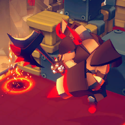
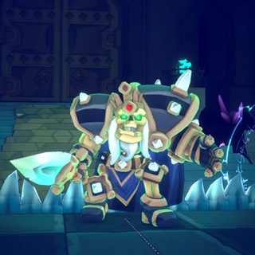
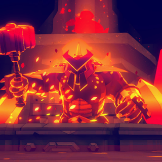
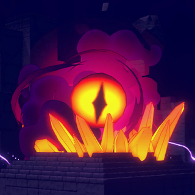
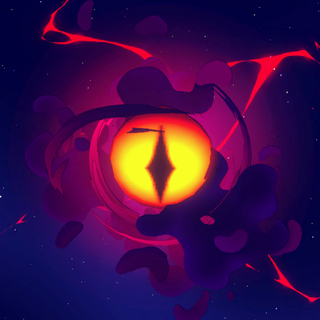

Boss & màn boss
Mỗi world kết thúc bằng boss stage có cơ chế riêng: W1 Inferno Hydra (10 000 HP, minecart + railgun), W2 Steelrail Overlord (25 000 HP, đoàn tàu di chuyển, railgun bắn mỗi 2 wave, tải trọng), W3 Skeleton King (999 999 HP — không giết được, vượt qua thử thách/t
Mô tả
- Mỗi world kết thúc bằng boss stage có cơ chế riêng: W1 Inferno Hydra (10 000 HP, minecart + railgun), W2 Steelrail Overlord (25 000 HP, đoàn tàu di chuyển, railgun bắn mỗi 2 wave, tải trọng), W3 Skeleton King (999 999 HP — không giết được, vượt qua thử thách/trial, rune trap), W4 Grand Artificer (55 000 HP, 2 phần: furnace + máy tẩy corrupted, 10 vòng), W5 Eye of the Void (mid-boss bước 7 + final boss không giới hạn vòng, 145 000 HP, 3 Core). Inferno Shard Boss L1–3 mở 3 kỹ năng thêm cho mỗi boss.
- Boss scene EnvScene_Boss_099/199/299/399/498/499 với Data_Boss01–05 (6–12 wave). AStageScript.CR_Intro (cutscene, có thể skip SKIP_CUTSCENE sau lần đầu — list_PlayerSeenIntroCutsceneInStage) → vòng chơi thường; boss xuất hiện wave chỉ định (type 101–105) với kỹ năng theo class; CR_RoundStart/RoundEnd của stage script điều khiển mechanic (tàu tiến, trial Skeleton King, Ancient tower kích hoạt, Void Army). Thắng: isBossDeadInBossStage hoặc hết wave (Skeleton King) → CR_Outro → thưởng + unlock (CR_UnlockProcess kiểm tra nhân vật/ember) → about after-boss endless (VICTORY_ENDLESS) tuỳ chọn.
Hình minh hoạ






Lưu ý
Mở khóa & điểm vào
Node cuối map (eStageType.BOSS, missionType BOSS, difficulty 10); W5 thêm MID_BOSS ở COSMO_MIDBOSS_STEP=7. Thắng boss → IsWorldCleared(difficulty, world) (StageRecord index 99) mở world sau + ember mới.
Điểm vào:
- MapSceneProcess.CR_BossNodeProc (missionType=3, difficulty=10)
- Tutorial BOSS_STAGE_WORLD_1..5 trước khi vào
Cách hoạt động
- W1 Inferno Hydra: Data_Boss01: 6 wave (wolves, lizards, slime, broodmother), boss wave cuối → Minecart (TRAIN_CART tutorial): tháp trên xe goòng tự tiến; Arrow tower có sẵn → Shard Boss: Corrupted Flame (malfunction 5 s, fireball → lava), Scorching Aura (bán kính 7 magma), Damaged Fortress (phá Arrow Tower hồi 30 %)
- W2 Steelrail Overlord (tàu): Obj_TrainSystem: sân là đoàn tàu, background chạy (setting STOP_MOVING_BACKGROUND) → TRAIN_RAILGUN: nạp trong battle, bắn mỗi 2 vòng, sát thương lớn lên boss → Shard: Steel Guardian (−80 % dmg, mỗi phát railgun −20 %), Snowfield Transit (vòng 4 khối đóng băng sau 3 vòng), Cargo Detection (tải trọng theo ô → giảm tốc bắn) (Quy tắc: Data_Boss02: 9 wave, 443 quái)
- W3 Skeleton King (trial): Data_Boss03: 10 wave, quái do boss triệu (list rỗng), diffMult tới 0.5 → Mỗi vòng chọn 1 trong các trial card (Obj_UI_SkeletonKingCurseCard): perk SKELETON_KING (7043 nhận thẻ khối, 7009 tháp, 7011 rút thêm, 7022 buff card, 7026 +100 vàng, 7030 chest) kèm bẫy 7044/7045 arrow trap, 7046 twisted → Rune trap: Frost/Flame/Heal/Ironhide/Shatter/Haste (Obj_SkeletonKingTrap) → Shard: Curse (trial k
- W4 Grand Artificer (2 phần): Phần 1: furnace + Ancient Defense Towers (51–55) tấn công tháp; Circuit System nối điện → Phần 2: máy tẩy (CLEANSE_SYSTEM) corrupted tile, 10 vòng, Void/Corrupted Altar → Shard: Simulation Prohibited (weather 1 vòng), Master Builder (xây Ancient tower lên khối), Furnace Empowerment (Ancient tower nhanh hơn, +10 %/vòng) (Quy tắc: Data_Boss04: 10 wave, 391 quái bot)
- W5 Eye of the Void (mid + final): Mid-boss: Obj_CosmoBossObelisk; Void Army mỗi vòng bay thẳng; Void Crystal → Void Core card → Final: không giới hạn vòng (BOSS_STAGE_WORLD_5_FINAL_DESC), Data_Boss05 12 wave + lặp; 3 Core 3500 HP (Lightning +25 % skill/Void Army speed, Frost đóng băng khối đặt trong battle, Magma sinh Energized Star hồi 1 % HP) → Thắng → mở Chaos Realm, Custom Game, Inferno Shard, Scrap Master/Joker
- Sau boss: Endless tiếp / unlock: CR_GameEndProc_RogueliteMode: StageRecord.RecordStageEnd(index 99), PlayerRecord.AddGamesWin(perfect nếu damageTaken=0), win streak → CR_UnlockProcess(checkCharacter, checkEmber): thông báo nhân vật/ember mới (list_NotifiedUnlocked*) → Tuỳ chọn 'Continue adventure until the flame goes out' (isStartedAfterBossEndlessMode) — không EXP, độ khó tăng 0.15/level → Achievement WORLD_n_*_CLEA
Luồng chi tiết theo code
Boss scene EnvScene_Boss_099/199/299/399/498/499 với Data_Boss01–05 (6–12 wave). AStageScript.CR_Intro (cutscene, có thể skip SKIP_CUTSCENE sau lần đầu — list_PlayerSeenIntroCutsceneInStage) → vòng chơi thường; boss xuất hiện wave chỉ định (type 101–105) với kỹ năng theo class; CR_RoundStart/RoundEnd của stage script điều khiển mechanic (tàu tiến, trial Skeleton King, Ancient tower kích hoạt, Void Army). Thắng: isBossDeadInBossStage hoặc hết wave (Skeleton King) → CR_Outro → thưởng + unlock (CR_UnlockProcess kiểm tra nhân vật/ember) → about after-boss endless (VICTORY_ENDLESS) tuỳ chọn.
Phần thưởng
Thưởng
| Ngữ cảnh | Thưởng | Bằng chứng |
|---|---|---|
| Thắng boss | Clear world; ember mới (Sacred/Arcflare/Soul+Frost/Ancient theo world, Normal); Chrono Traveler (W1 Heroic); achievement | PlayerLifetimeData.IsEmberUnlocked IsCharacterUnlocked |
Phần thưởng theo code
| Ngữ cảnh | Phần thưởng | Evidence |
|---|---|---|
| Thắng boss | Clear world ember mới (Sacred/Arcflare/Soul Frost/Ancient theo world Normal) Chrono Traveler (W1 Heroic) achievement | PlayerLifetimeData.IsEmberUnlocked; IsCharacterUnlocked |
Số liệu chính
| Chỉ số | Giá trị | Nguồn |
|---|---|---|
| Boss HP | 10 000 / 25 000 / 999 999 / 55 000 / 145 000 (+HardMode Boss HP %) | MonsterData_101..105 |
| COSMO_MIDBOSS_STEP / COSMO_SHOPONLY_STEP | 7 / [3,6,9] | Map |
| boss node difficulty | 10 | MapSceneProcess.CR_BossNodeProc |
| Data_Boss0x waves | B1 6w/211; B2 9w/443; B3 10w/0 (summon); B4 10w/391; B5 12w/505 | appendix/stages.md |
| GetBossHPMultiplier | tổng theo shard (HardModeSetting) — Boss HP +{0}% | HardModeSetting.GetBossHPMultiplier |
Ghi chú thiết kế
- Lưu trữ: isDefeatedCasualModeBoss/isDefeatedNormalModeBoss/isDefeatedHeroicModeBoss
- Lưu trữ: list_StageRecords_* (index 99)
- Lưu trữ: list_PlayerSeenIntroCutsceneInStage
Use case (6)
Bấm vào từng use case để mở. Mở/đóng tất cả
UC-01 W1 Inferno Hydra
Các bước- Data_Boss01: 6 wave (wolves, lizards, slime, broodmother), boss wave cuối
- Minecart (TRAIN_CART tutorial): tháp trên xe goòng tự tiến; Arrow tower có sẵn
- Shard Boss: Corrupted Flame (malfunction 5 s, fireball → lava), Scorching Aura (bán kính 7 magma), Damaged Fortress (phá Arrow Tower hồi 30 %)
| Actor | System |
|---|---|
| Trigger | EnvScene_Boss_099 |
| Evidence | MonsterScript_Boss01; Heroic loc BOSS_SKILL_W1_*; TutorialSettingData BOSS_STAGE_WORLD_1 |
UC-02 W2 Steelrail Overlord (tàu)
Các bước- Obj_TrainSystem: sân là đoàn tàu, background chạy (setting STOP_MOVING_BACKGROUND)
- TRAIN_RAILGUN: nạp trong battle, bắn mỗi 2 vòng, sát thương lớn lên boss
- Shard: Steel Guardian (−80 % dmg, mỗi phát railgun −20 %), Snowfield Transit (vòng 4 khối đóng băng sau 3 vòng), Cargo Detection (tải trọng theo ô → giảm tốc bắn)
| Actor | System |
|---|---|
| Trigger | EnvScene_Boss_199 |
| Quy tắc / số liệu | Data_Boss02: 9 wave, 443 quái |
| Evidence | MonsterScript_Boss_Desert; Obj_TrainSystem; Obj_TrainCart.eTrainCartBuffType; loc TRAIN_WEIGHT_LIMIT |
UC-03 W3 Skeleton King (trial)
Các bước- Data_Boss03: 10 wave, quái do boss triệu (list rỗng), diffMult tới 0.5
- Mỗi vòng chọn 1 trong các trial card (Obj_UI_SkeletonKingCurseCard): perk SKELETON_KING (7043 nhận thẻ khối, 7009 tháp, 7011 rút thêm, 7022 buff card, 7026 +100 vàng, 7030 chest) kèm bẫy 7044/7045 arrow trap, 7046 twisted
- Rune trap: Frost/Flame/Heal/Ironhide/Shatter/Haste (Obj_SkeletonKingTrap)
- Shard: Curse (trial không lợi), Stratagem (trap tăng mỗi vòng), Final Trial (trial mỗi 2 vòng)
| Actor | System |
|---|---|
| Trigger | EnvScene_Boss_299 |
| Kết quả | Sống sót hết wave = thắng |
| Quy tắc / số liệu | HP 999 999 = không cần giết |
| Evidence | MonsterScript_Boss_Mountain_01; Perk_SkeletonKingGetBlockCard; Obj_SkeletonKingTrap.eTrapType; Obj_SkeletonKingArrowTrap |
UC-04 W4 Grand Artificer (2 phần)
Các bước- Phần 1: furnace + Ancient Defense Towers (51–55) tấn công tháp; Circuit System nối điện
- Phần 2: máy tẩy (CLEANSE_SYSTEM) corrupted tile, 10 vòng, Void/Corrupted Altar
- Shard: Simulation Prohibited (weather 1 vòng), Master Builder (xây Ancient tower lên khối), Furnace Empowerment (Ancient tower nhanh hơn, +10 %/vòng)
| Actor | System |
|---|---|
| Trigger | EnvScene_Boss_399 |
| Quy tắc / số liệu | Data_Boss04: 10 wave, 391 quái bot |
| Evidence | MonsterScript_Boss_Depth; Obj_AncientMech_CleanseSystem; Obj_AncientTower_Base; loc BOSS_STAGE_WORLD_4_PART_2 |
UC-05 W5 Eye of the Void (mid + final)
Các bước- Mid-boss: Obj_CosmoBossObelisk; Void Army mỗi vòng bay thẳng; Void Crystal → Void Core card
- Final: không giới hạn vòng (BOSS_STAGE_WORLD_5_FINAL_DESC), Data_Boss05 12 wave + lặp; 3 Core 3500 HP (Lightning +25 % skill/Void Army speed, Frost đóng băng khối đặt trong battle, Magma sinh Energized Star hồi 1 % HP)
- Thắng → mở Chaos Realm, Custom Game, Inferno Shard, Scrap Master/Joker
| Actor | System |
|---|---|
| Trigger | EnvScene_Boss_498 (bước 7) / 499 (cuối) |
| Quy tắc / số liệu | COSMO_SHOPONLY_STEP [3,6,9]: bước chỉ có shop |
| Evidence | MonsterScript_Boss_Cosmo_Midboss/FinalBoss; Map.COSMO_MIDBOSS_STEP; Map.COSMO_SHOPONLY_STEP; MonsterData_087..089 |
UC-06 Sau boss: Endless tiếp / unlock
Các bước- CR_GameEndProc_RogueliteMode: StageRecord.RecordStageEnd(index 99), PlayerRecord.AddGamesWin(perfect nếu damageTaken=0), win streak
- CR_UnlockProcess(checkCharacter, checkEmber): thông báo nhân vật/ember mới (list_NotifiedUnlocked*)
- Tuỳ chọn 'Continue adventure until the flame goes out' (isStartedAfterBossEndlessMode) — không EXP, độ khó tăng 0.15/level
- Achievement WORLD_n_*_CLEAR, BOSS_FIGHT_SPECIAL_WORLD_n, FAST_BOSS_KILL
| Actor | Player |
|---|---|
| Trigger | Victory popup boss |
| Evidence | MainGame.CR_GameEndProc_RogueliteMode; MainGame.CR_UnlockProcess; GameplayData.SetStartAfterBossChallengeMode; eAchievementType |
Cấu hình (5)
Gộp mọi nguồn: const trong code, JSON mặc định trong Resources, bảng static, storage key, AB test, cờ server.
| Nguồn | Key | Kiểu | Giá trị | Ý nghĩa | Nơi định nghĩa |
|---|---|---|---|---|---|
| asset | Boss HP | int | 10 000 / 25 000 / 999 999 / 55 000 / 145 000 (+HardMode Boss HP %) | MonsterData_101..105 | |
| code const | COSMO_MIDBOSS_STEP / COSMO_SHOPONLY_STEP | int | 7 / [3,6,9] | Cấu trúc map W5 | Map |
| code const | boss node difficulty | int | 10 | IntermediateData.difficulty ở boss | MapSceneProcess.CR_BossNodeProc |
| asset | Data_Boss0x waves | table | B1 6w/211; B2 9w/443; B3 10w/0 (summon); B4 10w/391; B5 12w/505 | appendix/stages.md | |
| code const | GetBossHPMultiplier | int | tổng theo shard (HardModeSetting) — Boss HP +{0}% | HardModeSetting.GetBossHPMultiplier |
Giao diện (UI)
| Element | Class | Mục đích |
|---|---|---|
| Boss dialog | Monster_Boss_02/03/04.eDialogKey | Thoại NPCDialog loc |
| Skill list | INFERNO_SHARD_BOSS_SKILL_TITLE | Hiện kỹ năng thêm khi có shard |
Storage keys
isDefeatedCasualModeBoss/isDefeatedNormalModeBoss/isDefeatedHeroicModeBoss list_StageRecords_* (index 99) list_PlayerSeenIntroCutsceneInStage
Chưa đọc được / ghi chú
- Số liệu kỹ năng boss (damage fireball, railgun dmg, trial count) nằm trong MonsterScript_Boss_* chưa đọc
- Wave lặp của final boss (list_RepeatRewardTypes/CosmoBoss) chỉ có khung
Tính năng liên quan
Màn & wave (Stages) Quái (Monsters) Độ khó & Inferno Shard Bản đồ run & node Cơ chế màn theo world
Nguồn đã đọc
- appendix/stages.md
- appendix/loc-en.txt (Heroic, GameTutorial)
- features/MonsterSettingData.md
- PseudoC/Asmdef_Emberward/Map.c